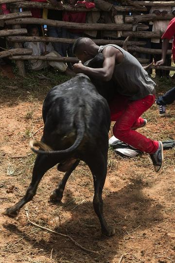

Home / Crossroads and Golden Ages / Africa: Great Lakes and Indian Ocean
Encyclopedia ID 901
Fanorona
Also known as Fanoron-Sivy
National board game with capture by approach and withdrawal.
Heritage note
Part of the living heritage of Madagascar.
Origins
Usually placed in the era of Crossroads and Golden Ages (about 500 to 1500), although its exact origins are uncertain, within the cultural world of Africa: Great Lakes and Indian Ocean.
Available in Arcforge
Try a 90-second preview in your browser Google Play App Store
Sources
Related entries
Tanzanian draughts
Tanzania · Board and table games


More from Madagascar

Antaimoro flower paper
Madagascar · Crafts and makingPlay preview · in the Handmade Paper of the World app
Hira gasy village troupe contest
Madagascar · Performance and storytellingPlay preview · in the Story & Theatre of the World app
Katro / Katra
Madagascar · Board and table games
Moraingy drum-and-strike duel
Madagascar · Wrestling and martial sportsPlay preview · in the Sports & Skill of the World app
Savika
Madagascar · Street and playground games
Valiha tube zither
Madagascar · Musical instrumentsPlay preview · in the Zithers & Harps of the World app